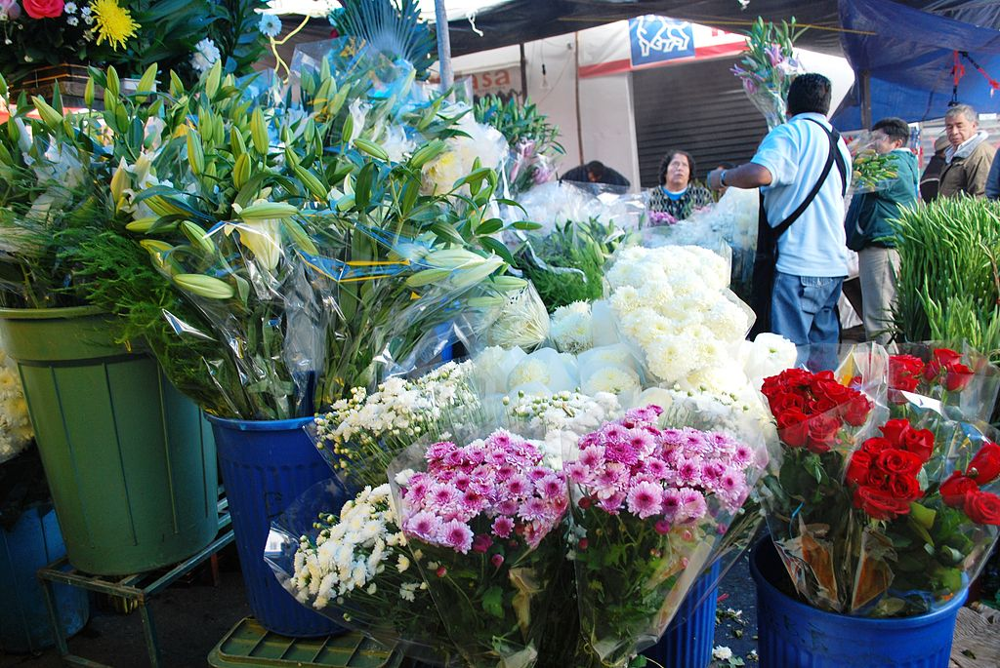

La economía mexiquense contribuye un 9.5% al Producto Interno Bruto de México, lo que le posiciona como la segunda economía del país, sólo detrás de la Ciudad de México. El PIB estatal está compuesto en un 28% por la industria manufacturera, de maquinaria y equipo, de electrónicos, automotriz, textil y maquiladora; un 22% por el sector servicios; el 20% por el comercio, hoteles y restaurantes; y el 15% por los servicios financieros y actividades inmobiliarias.
En cuanto a las actividades primarias, el estado de México destaca en la producción de clavel, crisantemo, rosa y es el estado de México, el mayor productor de floricultura en todo el país; las cuales además se exportan a países como Japón, Estados Unidos, Canadá y Reino Unido; en esta entidad también se producen nopal, tuna, xoconostle, zanahoria, papa, chile, calabaza, fríjol, tomate verde, chícharo, maíz en grano, cebada y trigo. Además de ser un estado que a pesar de carecer de litoral (acceso al mar) se posiciona como el primer productor acuícola nacional de trucha y carpa. El estado de México es el octavo productor de leche a nivel nacional, de la cual, la mayor producción láctea y sus derivados, tiene como destino la Ciudad de México y su Zona Metropolitana
El estado de México es el mayor productor de flores en todo el país.